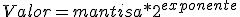

¿Cómo representaremos los datos de tipo real en Java?
El tipo de dato real permite representar números con decimales. Al igual que ocurre con los enteros, la mayoría de los lenguajes definen más de un tipo de dato real, en función del número de bits usado para representarlos. Cuanto mayor sea ese número:
- Más grande podrá ser el número real representado en valor absoluto.
- Mayor será la precisión de la parte decimal.
Entre cada dos números reales cualesquiera, siempre tendremos matemáticamente hablando infinitos números reales, pero un ordenador no puede representar infinitos números, porque no dispone de capacidad ilimitada, por lo que la mayoría de ellos los representaremos de forma aproximada.
¡¡No fastidies!! ¿Tanta informática, tanto ordenador cada vez más potente, y ni siquiera puedo representar de forma exacta la mayoría de los números reales?
Justamente, sentimos decirte que así es, pero no se hunde el mundo por ello, y de una forma u otra, tenemos precisión suficiente para casi todo lo que nos propongamos, ya que como humanos, la "precisión infinita" tampoco la manejamos muy bien.
Por ejemplo, en la aritmética convencional, cuando dividimos 10 entre 3, el resultado es 3.3333333…, con la secuencia de 3 repitiéndose infinitamente. En el ordenador sólo podemos almacenar un número finito de bits, por lo que el almacenamiento de un número real será siempre una aproximación.
Los números reales se representan en coma flotante o notación científica, que consiste en trasladar la coma decimal a la primera cifra significativa del valor, con objeto de poder representar el máximo de números posible.
Un número en el interior de un computador se expresa como:

Donde la mantisa son las cifras significativas del número (pues hemos trasladado la coma decimal hasta el principio). De este modo, para almacenar el número, sólo se guardan la mantisa y el exponente al que va elevada la base. Los bits empleados por la mantisa representan la precisión del número real, es decir, el número de cifras decimales significativas que puede tener el número real, mientras que los bits del exponente expresan la diferencia entre el mayor y el menor número representable, lo que viene a ser el intervalo de representación.
En Java las variables de tipo float se emplean para representar los números en coma flotante de simple precisión de 32 bits, de los cuales 24 son para la mantisa y 8 para el exponente. La mantisa es un valor entre -1.0 y 1.0 y el exponente representa la potencia de 2 necesaria para obtener el valor que se quiere representar. Por su parte, las variables tipo double representan los números en coma flotante de doble precisión de 64 bits, de los cuales 53 son para la mantisa y 11 para el exponente.